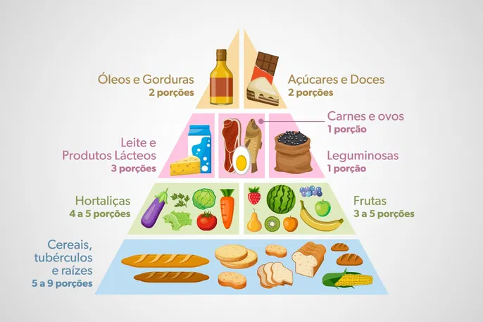

A pirâmide alimentar é um tipo de gráfico que organiza os alimentos de acordo com suas funções e seus nutrientes.
Importante ressaltar que a principal finalidade dessa organização, consiste em fornecer informações acerca de uma alimentação saudável e equilibrada.

Principais Fontes e Funções:
Carboidratos (Energia Rápida):
Função: Principal fonte de energia para o cérebro e músculos.